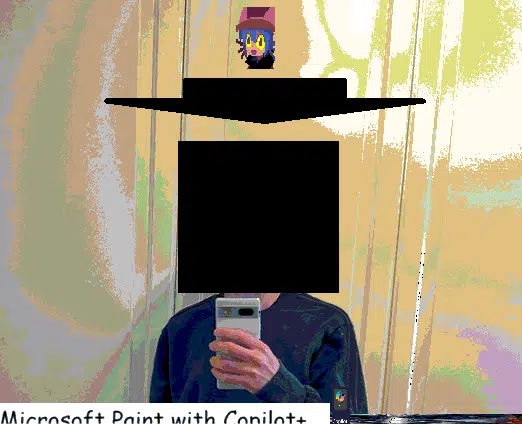
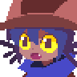
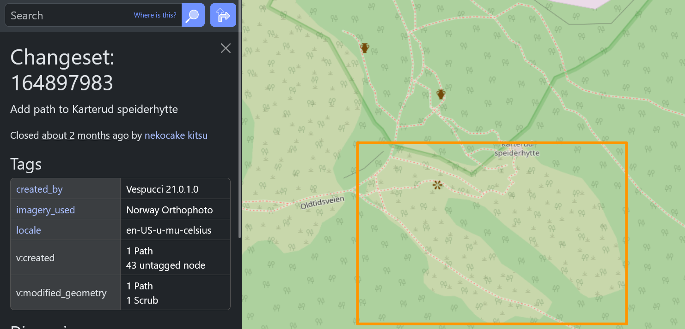
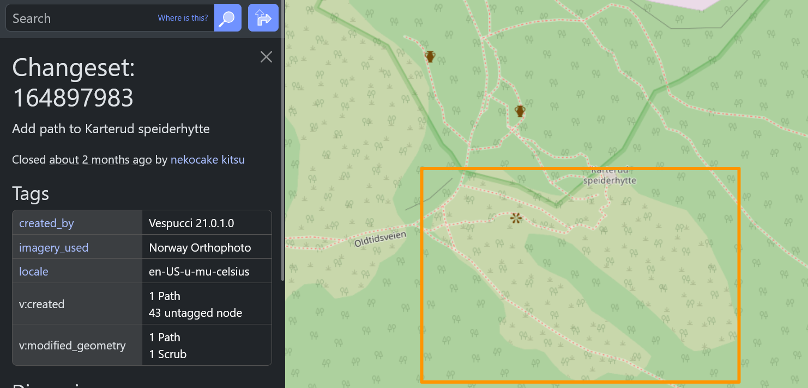

nekocake
kitsu
onekocake kitsune kensuke
privacy

about me


heya!
im nekocake kitsu
i am a programer, graphics
designer, and a openstreetmap contributor
i live in the outskirts of
oslo
i like tinkering with tech
and self hosting servers
music taste
some of my favorate
artists are:
cameilla
vertigoaway
pinocchioP
check
them out!!
also check out my last.fm
openstreetmap
openstreetmap is a map
database, just like gmaps, apple maps, and bing maps, minus the proprietary code and data (its open source)
it being open source means that
you can contribute data to it and use it as you like
i have contributed over 340
edits to the database, adding and updating roads, trails, and a whole bunch of other data

 

a abandoned hut. before, there was no mapped out path that goes to the hut. with my help, i mapped out all paths leading to the hut for other travelers to use